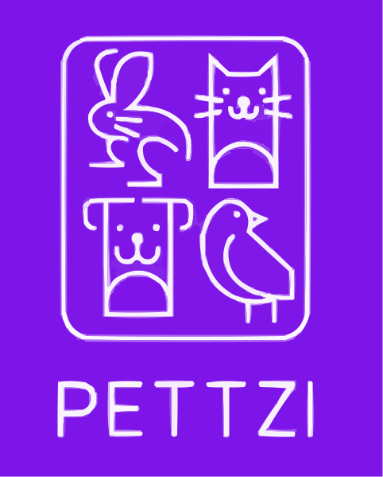

FIELD RECORD / 001✳
A GOOD DOG
4 yearsMiso
young
Health, in contextVisits · vaccines · little wins↗

pettzi. ESAn independent engineering portfolio
Pettzi began as a place to keep every detail of a pet’s life in one thoughtful record. Today, it’s a public study in how to build software with care—from the data model to the smallest interface detail.
A completed product experiment. Shared as a reference, not a live service.
01 / THE INTENT
Care happens in fragments: a vaccine at the clinic, a note from a sitter, a reminder that arrives at just the right time. Pettzi explored what it might feel like to bring those fragments together without making care feel like admin.
The product is no longer operated. The code remains as a portfolio project: a chance to examine the architecture, tradeoffs, and design decisions behind a real full-stack build.
Read the project READMEHealth events, reminders, documents, and the people who care for a pet belong together.
Each domain owns a clear part of the system, with contracts that make the seams visible.
Permission, data access, and accessible interaction shape the experience from the start.
02 / UNDER THE SURFACE
A modular monolith at the edges, serverless services in the middle, and one carefully modeled table beneath it all.
Pet, owner, event, and reminder records live in a shared DynamoDB table. Key builders keep query patterns explicit and predictable.
Explore the table design ↗OpenAPI describes the API surface. Domain libraries hold shared models and mapping rules, while handlers stay deliberately small.
Browse the domain libraries ↗03 / FIELD NOTES
A single-table model works when its access patterns are clear and treated as part of the domain—not as an afterthought.
Bounded contexts help keep changes understandable, but only when the contracts between them remain visible and boring.
Accessible contrast, useful empty states, and clear language are infrastructure for trust, especially around care records.
THE MATERIALS
AN OPEN NOTEBOOK
The product chapter is complete. The engineering notes are still here for anyone building thoughtful software of their own.
Visit the GitHub repository